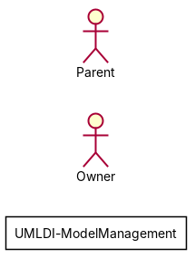
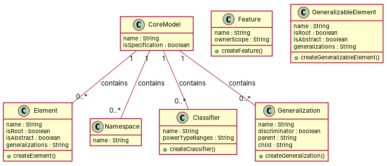

R1: A core model contains elements R2: A core model contains model elements. Each model element contains a name and a boolean value that states whether or not the model element is a specification R3: In a core model, a generalizable element contains two attributes: one that states whether the element is a root and another one that states whether it is abstract R4: core models contains namespaces R5: A core model contains classifiers R6: A core model contains features. Each feature contains an attribute called ownerScope which is of ScopeKind R7: A core metamodel has relationships R8: The core has generalitations. Each generalization has an attribute discriminator R9: Model elements may have a namespace R10: A core model contains generalizable elements. Ech elements is linked to zero or many generalizations R11: A core model contains elements of type namespace. Each namespace is composed by model elements R12: Core models contain classifiers. Each classifier may have power type ranges, which are generalizations R13: In a core model, Features may have an owner which is a classifier R14: A core model contain generalizations. Each generalization has a parent which is a generalizable element R15: GeneralizableElement has one and only Generalization
Red, struck-through: removed by ambiguity removal; green: added.
| actors (2 → 2) |
|---|
| owner |
| parent |
| classes (6 → 6) |
|---|
| Classifier |
| CoreModel |
| Element |
| Generalization |
| ModelElement |
| Namespace |
| attributes (6 → 6) |
|---|
| Classifier.power type range |
| Element.one |
| Element.root |
| Generalization.attribute discriminator |
| Generalization.parent |
| ModelElement.name |
| relations (6 → 6) |
|---|
| has: CoreModel -> Classifier |
| has: CoreModel -> Element |
| has: CoreModel -> Generalization |
| has: CoreModel -> ModelElement |
| has: CoreModel -> Namespace |
| has: ModelElement -> Namespace |
| id | req | type | cue | status | readings / explanation |
|---|---|---|---|---|---|
| A1 | R2 | coordination | and+or | open | Each model element contains a name and a boolean value that states whether or not the model element is a specification.; Each model element contains a name and a boolean value that states whether or not the model element is a specification, and a boolean value that states whether or not the model element is a core model. The sentence is ambiguous as it could imply that each model element has a boolean value for being a specification and an additional boolean value for being a core model, or it could mean that each model element has only a boolean value for being a specification. |
| A2 | R3 | referential | it | open | In a core model, a generalizable element contains two attributes: one that states whether the element is a root and another one that states whether it is abstract.; In a core model, a generalizable element contains two attributes: one that states whether the element is a root and another one that states whether it is abstract, and a boolean value that states whether the element is a core model. The sentence is ambiguous as it could imply that a generalizable element in a core model has two attributes and an additional boolean value for being a core model, or it could mean that a generalizable element in a core model has only two attributes. |
| A3 | R3 | coordination | modifier scope: root (relative clause) | open | In a core model, a generalizable element contains two attributes: one that states whether the element is a root and another one that states whether it is abstract.; In a core model, a generalizable element contains two attributes: one that states whether the element is a root and another one that states whether it is abstract, and a boolean value that states whether the element is a core model. The sentence is ambiguous as it could imply that a generalizable element in a core model has two attributes and an additional boolean value for being a core model, or it could mean that a generalizable element in a core model has only two attributes. |
| A4 | R10 | quantifier | zero or many | open | Each element is linked to zero or many generalizations.; Each element is linked to one or more generalizations. The sentence is ambiguous as it could imply that each element can be linked to zero or more generalizations, or it could mean that each element must be linked to at least one generalization. |


"""Code skeleton generated from the shared model of D2/UMLDI-ModelManagement.
Every class and method records the requirement(s) it traces to."""
from __future__ import annotations
import dataclasses as _dc
import enum as _enum
import typing as _t
@_dc.dataclass
class CoreModel:
"""Source: R1, R4, R5, R11"""
name: _t.Optional[str] = None
isSpecification: _t.Optional[bool] = None
classifiers: _t.List["Classifier"] = _dc.field(default_factory=list)
elements: _t.List["Element"] = _dc.field(default_factory=list)
generalizations: _t.List["Generalization"] = _dc.field(default_factory=list)
namespaces: _t.List["Namespace"] = _dc.field(default_factory=list)
@_dc.dataclass
class Element:
"""Source: R2, R3, R10"""
name: _t.Optional[str] = None
isRoot: _t.Optional[bool] = None
isAbstract: _t.Optional[bool] = None
generalizations: _t.Optional[str] = None
def createElement(self) -> None:
"""Operation."""
raise NotImplementedError
@_dc.dataclass
class Namespace:
"""Source: R11"""
name: _t.Optional[str] = None
@_dc.dataclass
class Classifier:
"""Source: R5, R12, R13"""
name: _t.Optional[str] = None
powerTypeRanges: _t.Optional[str] = None
def createClassifier(self) -> None:
"""Operation."""
raise NotImplementedError
@_dc.dataclass
class Feature:
"""Source: R6"""
name: _t.Optional[str] = None
ownerScope: _t.Optional[str] = None
def createFeature(self) -> None:
"""Operation."""
raise NotImplementedError
@_dc.dataclass
class Generalization:
"""Source: R7, R8, R14, R15"""
name: _t.Optional[str] = None
discriminator: _t.Optional[bool] = None
parent: _t.Optional[str] = None
child: _t.Optional[str] = None
def createGeneralization(self) -> None:
"""Operation."""
raise NotImplementedError
@_dc.dataclass
class GeneralizableElement:
"""Source: R3, R10, R15"""
name: _t.Optional[str] = None
isRoot: _t.Optional[bool] = None
isAbstract: _t.Optional[bool] = None
generalizations: _t.Optional[str] = None
def createGeneralizableElement(self) -> None:
"""Operation."""
raise NotImplementedError
| python_compiles | True |
|---|---|
| java_compiles | True |
| attribute_mismatches | 0 |
| method_mismatches | 0 |
| use_cases | 0 |
| use_cases_without_actor | 0 |
| use_cases_without_method | 0 |
| actors_without_use_case | 2 |
| relations_to_unknown_class | 0 |
| inconsistencies | 2 |
| inconsistency_rate | 0.2222 |
| requirement_coverage | 0.9333 |
| validator fixes | |
| assumptions for open ambiguities | [{"tag": "R2 (coordination, \"and+or\"): readings", "assumption": "Assuming the second reading: Each model element contains a name and a boolean value that states whether the model element is a specification, and a boolean value that states whether the model element is a core model"}, {"tag": "R3 (referential, \"it\"): readings", "assumption": "Assuming the second reading: In a core model, a generalizable element contains two attributes: one that states whether the element is a root and another one that states whether it is abstract, and a boolean value that states whether the element is a core model"}, {"tag": "R3 (coordination, \"modifier scope: root (relative clause)\"): readings", "assumption": "Assuming the second reading: In a core model, a generalizable element contains two attribut |
| element | P | R | F1 | TP/FP/FN |
|---|---|---|---|---|
| classes | 0.857 | 0.75 | 0.8 | 6/1/2 |
| attributes | 0.211 | 0.5 | 0.296 | 4/15/4 |
| relations | 0.0 | 0.0 | 0.0 | 0/4/11 |
| relations_strict | 0.0 | 0.0 | 0.0 | 0/4/12 |